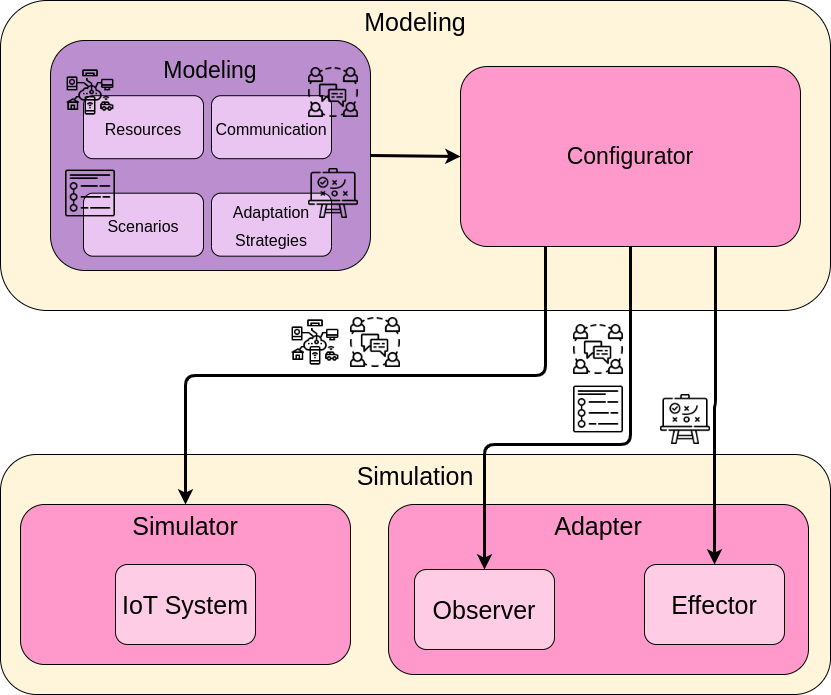

@@include('header.htm')

@@include('blocks/navigation-inner.htm')

<!-- details page -->
<section class="pt-5">
  <div class="container shadow section-sm rounded">
    <div class="row">
      <!-- sidebar -->
      <div class="col-lg-3">
        <ul class="sidenav">
          <li title="Genreral Info" class="sidelist">
            <a href="list.html">Genreral Info</a>
          </li>
          <li class="sidelist parent active">
            <a href="components.html">Components</a>
            <ul>
              <li class="sidelist">
                <a href="configurator.html">Configurator</a>
              <li class="sidelist">
                <a href="simulator.html">Simulator</a>
              <li class="sidelist">
                <a href="adapter.html">Adapter</a>
            </ul>
          </li>
          <li class="sidelist parent">
            <a href="list.html">Tutorial</a>
            <ul>
              <li class="sidelist">
                <a href="single.html">Startup</a>
              <li class="sidelist">
                <a href="envaiot-ml.html">EnvAIoT-ML</a>
            </ul>
          </li>
        </ul>
      </div>

      <!-- body -->
      <div class="col-lg-8">
        <div class="px-lg-5 px-4">
          <h2 class="mb-4 font-weight-medium">Components</h2> <!-- main content -->
          <div class="content">
            <p>EnvAIoT consists of three components that operate in two stages.
              They are demonstrated in the figure below.</p>
            <p></p>
            <p>
              In the Modelling phase, the user models the system following the EnvAIoT modelling language,
              which is divided into resources (the IoT components), communication (configuration to connect
              with the message service), scenarios (key situations of the adaptation),
              and adaptation strategies (actions to handle scenarios that require adaptation).
              Then the model is sent to the Configurator, which is the component responsible for receiving
              those models and configuring the remaining components, Simulator and Adapter, that compose the
              Simulation phase. The resources and the communication configure the Simulator; communication,
              scenarios, and adaptation strategies set the Adapter.
            </p>
          </div>
          <!-- navigation -->
          <nav class="pagination">
            <!-- <a class="nav nav-prev" href="https://examplesite.com/"><i class="ti-arrow-left mr-2"></i>
              <span class="d-none d-md-block">Hugo documentation theme</span></a> -->
            <a class="nav nav-next" href="/configurator.html"> <span class="d-none d-md-block">Configurator</span><i
                class="ti-arrow-right ml-2"></i></a>
          </nav>
        </div>
      </div>
    </div>
  </div>
</section>
<!-- /details page -->

@@include('blocks/footer.htm')

@@include('footer.htm')